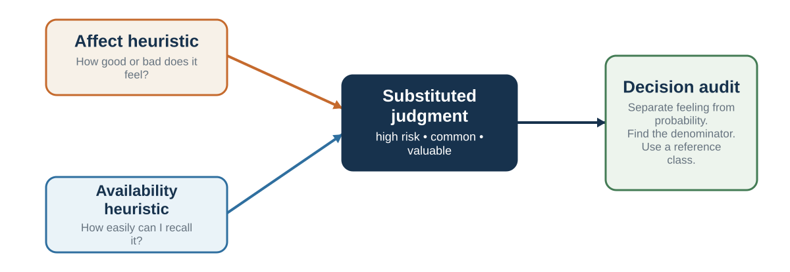

9 What Feels Likely: Availability, Affect, and Resemblance
Three useful cues become misleading when they silently replace value, frequency, or conditional probability
Learning goals
- Distinguish affect, availability, and representativeness by the question each shortcut answers.
- Explain why vivid cases and coherent prototypes can hide denominators and base rates.
- Redesign one risk judgment so that feeling, story, and statistical evidence remain visible but separate.
Affect: when feeling answers first
The affect heuristic occurs when people use feelings of goodness or badness as a guide to judgment. If something feels good, people tend to judge its benefits as high and its risks as low. If something feels bad, people tend to judge its risks as high and its benefits as low (Slovic et al., 2002).
This shortcut is deeply natural. Emotion summarizes past experience, bodily response, social meaning, and immediate value. A bad feeling can signal danger. A good feeling can signal opportunity, trust, or familiarity. It would be impossible to make every decision without affect.
The affect heuristic becomes visible when feelings substitute for analysis. Suppose people are asked about a technology. If they feel positively toward it, they may judge it as highly beneficial and relatively safe. If they feel negatively toward it, they may judge it as risky and less beneficial. Alhakami and Slovic (1994) found that perceived risks and perceived benefits of activities were often negatively related in people’s judgments, even though in the world risks and benefits can both be high. Finucane and colleagues (2000) showed that manipulating affective information could change perceived risks and benefits.
A sea-star-versus-panda comparison turns this mechanism into a conservation decision. The panda is immediately appealing; the ochre sea star may carry less visual warmth while playing a major ecological role.
Allocate a fixed conservation budget between Species A, which is charismatic and familiar, and Species B, which is less appealing but has stronger evidence of ecosystem impact. Make an intuitive allocation first, then reveal the ecological evidence and revise it. The gap shows what affect supplied—and what the target question still required.
The affect heuristic can be useful. If you feel uneasy walking down a dark street, that feeling may summarize subtle cues: isolation, lighting, past experience, body posture of others, and uncertainty. If you feel trust toward a colleague, that may reflect repeated reliable interaction. If you feel disgust toward spoiled food, the feeling protects you.
But affect can also mislead. A risk may feel low because it is familiar, voluntary, or socially accepted. Driving may feel safer than flying because it is familiar and controlled, even when statistical risk comparisons may differ. A financial investment may feel good because others are excited. A candidate may feel right because they are similar to the interviewer. A policy may feel wrong because it is associated with a disliked group. A brand may feel trustworthy because of repetition, not evidence.
The affect heuristic also helps explain why debates can become polarized. People do not evaluate facts in emotional neutrality. Once an issue becomes affectively charged, new information is filtered through liking, disliking, fear, anger, pride, or identity. A person who likes a technology sees benefits; a person who dislikes it sees risks. A person who likes a leader sees strength; a person who dislikes the leader sees arrogance.
Earlier, emotion was described as a value signal. The affect heuristic is what happens when that value signal becomes a broad shortcut for judgment. The problem is not feeling. The problem is using feeling to answer the wrong question.
A useful corrective is to separate affect from prediction:
What do I feel about this option? What does that feeling tell me about my values? What evidence do I have about likely outcomes? Would my probability judgment change if I felt differently? What would someone who does not share my emotional reaction notice?
The affect heuristic is often the first draft of valuation. It should not always be the final draft of belief.
Why the three shortcuts reinforce one another
Affect, availability, and resemblance often point in the same direction, which makes their conclusion feel multiply supported. A vivid case is easy to retrieve, emotionally charged, and representative of a familiar danger story. The three experiences can look like three pieces of evidence even when they come from one exposure.
Consider a dramatic product failure shared repeatedly online. Availability makes the failure easy to recall. Affect supplies anger or fear. Resemblance makes another product with similar packaging feel like the same kind of threat. If the repeated posts all trace back to one incident, the apparent convergence is not independent confirmation. It is one event echoed through memory, feeling, and categorization.
The same problem appears in hiring. One charismatic candidate reminds committee members of a successful former colleague. That remembered example becomes available; similarity activates a prototype; positive affect spills into forecasts of competence. The committee may say that “all the signals point the same way,” even though the signals are correlated outputs of one first impression.
The corrective is an independence audit. List each reason for the judgment, then trace its source. Did two reasons arise from the same anecdote? Did the feeling arise because the case was vivid? Did the prototype come from a success story selected after the outcome? Independent work samples, base rates, and criterion-specific ratings add genuinely new information. Rephrasing the same impression does not.
This is why the book treats mechanisms before labels. Naming three heuristics can create the illusion of three causes. A causal map asks whether one upstream cue generated all three.
Availability: what comes to mind feels common

The availability heuristic occurs when people judge frequency, probability, or importance by how easily examples come to mind (Tversky & Kahneman, 1973). If examples are easy to recall or imagine, the event feels common or likely. If examples are hard to recall, the event feels rare or unlikely.
Availability and affect can be sensible cues, but vividness, recency, and incidental emotion can make them diverge from frequency and diagnostic evidence (Tversky & Kahneman, 1973; Slovic et al., 2002; Lerner et al., 2015).
Availability is often sensible. Common events are often easier to remember than rare events. Personal experience can be useful evidence. If you have repeatedly seen a supplier miss deadlines, it is reasonable to judge the supplier as unreliable. If a road is often congested when you use it, your memory is relevant.
But availability is influenced by more than frequency. It is affected by vividness, recency, emotional intensity, media coverage, personal experience, social discussion, and ease of imagination.
A plane crash receives dramatic news coverage. The images are vivid. The event becomes available. Flying may then feel more dangerous than before, even if the statistical risk remains very low. A friend’s bad medical experience may loom larger than base-rate data. A recent failure may dominate a performance review. A memorable start-up success may make entrepreneurship seem easier than it is. A single vivid crime may shift public perception more than broader crime trends.
Lichtenstein and colleagues (1978) found that people’s estimates of causes of death were related to availability and media coverage. Dramatic causes were often overestimated, while less dramatic but more common causes were underestimated. Combs and Slovic (1979) similarly showed that newspaper coverage was related to distorted frequency judgments. Events that receive more attention become mentally available.
Availability also works through retrieval fluency. Schwarz and colleagues (1991) asked participants to recall either six or twelve examples of assertive behavior. People who had to recall twelve examples often rated themselves as less assertive than those who recalled six, because retrieving twelve examples was difficult. The experience of difficulty became information. People did not simply count examples; they used ease of retrieval as a cue.
This has wide application.
A manager evaluating an employee may overweight the most recent incident because it is available. This is the recency effect in performance evaluation. A doctor may overdiagnose a condition recently encountered. A student may overestimate the difficulty of an exam after hearing one horror story. A parent may overestimate rare dangers that are vivid and underestimate common dangers that are mundane. A voter may judge national conditions based on a few memorable stories.
Availability affects organizations as well. After a crisis, leaders may overcorrect toward the last failure. If a cybersecurity breach occurred, cybersecurity may dominate attention. If a public relations scandal occurred, reputation may dominate. These concerns may be legitimate, but availability can crowd out other risks.
Availability can also be deliberately manipulated. News, advertising, political campaigns, social media, and organizational storytelling all influence what comes easily to mind. If a company repeatedly celebrates customer success stories but hides failure data, employees may overestimate customer satisfaction. If a political campaign repeatedly highlights a vivid threat, voters may overestimate its frequency. If social media repeatedly shows extreme lifestyles, users may misjudge what is normal.
The corrective is not to ignore memory. The corrective is to ask whether memory is representative.
How many examples come to mind? Why do these examples come to mind? Are they recent, vivid, emotional, or repeated? What is the base rate? What would a broader sample show? What cases are missing because they are quiet, ordinary, or invisible?
Availability is useful when memory samples the environment fairly. It misleads when memory is biased by salience.
Resemblance: what fits the story feels probable

The representativeness heuristic judges a case by how closely it resembles a prototype or coherent story (Kahneman & Tversky, 1972; Tversky & Kahneman, 1974). A confident speaker looks like a leader. A quiet reader sounds like a librarian. A founder in a hoodie with an ambitious vision resembles a familiar story of technology success. Similarity can contain evidence, but probability also depends on how common the category is and how diagnostically the observed feature distinguishes it from alternatives.
The Linda problem reveals the substitution. Participants read about a bright, outspoken person concerned with discrimination and social justice. Many judge “Linda is a bank teller and active in the feminist movement” more likely than “Linda is a bank teller” because the richer description fits better. Yet an event joined with an additional condition cannot be more probable than the event alone (Tversky & Kahneman, 1983). Narrative fit answered “Which description resembles Linda?” while the target asked “Which event includes more possible cases?”
Hiring creates the same risk without a puzzle. A committee may treat confidence, polish, an elite degree, or conversational ease as signs of future performance because these features fit its image of talent. The right correction is not to ban resemblance; it is to specify the relevant reference class and test which observed features predict the defined job outcome. A prototype is a hypothesis about predictive features, not a competence measure.
Brief impressions can nevertheless predict how people respond to a prototype. Todorov et al. (2005) found that competence impressions formed from photographs of unfamiliar political candidates predicted election winners above chance. The result shows that facial appearance can influence or track voter response; it does not show that the faces reveal governing competence. Candidate selection, photograph selection, exposure, stereotypes, and other correlated cues remain plausible contributors. The hiring lesson is the same: a first impression can predict a chooser’s reaction without measuring the job-relevant quality the chooser believes it sees.
The next statistical chapters provide the formal correction. At this stage, use three questions: How common is the category? How diagnostic is the resemblance? What alternative category could produce the same features? A good match to a story is not the same as a high conditional probability.
Integral affect or incidental spillover?
Chapter 5 treated emotion as part of valuation: a feeling can reveal what an outcome means to the decision-maker. The narrower problem here is predictive judgment. A sense of unease may summarize diagnostic cues, but it becomes misleading when an incidental or misattributed feeling supplies a probability estimate about the option.
Schwarz and Clore (1983) found that mood influenced reported life satisfaction, and that directing attention to the weather could reduce the effect by making the source of mood salient. The mind asks, in effect, “How do I feel about my life?” and uses current feeling unless given a reason to attribute it elsewhere.
Different emotions also carry different appraisals. Anger is associated with certainty and individual control, while fear is associated with uncertainty and situational control. Experiments have found that anger can increase optimistic risk judgments and risk taking relative to fear, even when both emotions are negative (Lerner & Keltner, 2001). The category “negative emotion” is therefore too crude.
Incidental emotion matters in markets and organizations, but claims require caution. Correlations between sunshine, sporting outcomes, and financial returns are intriguing and can reflect mood, attention, or other mechanisms; they do not imply that every sunny day causes irrational buying. Laboratory and field effects vary with context and specification (Edmans et al., 2007; Hirshleifer & Shumway, 2003).
A useful question is: Is this feeling information about the option, or information carried into the option? Name its source before allowing it to influence a forecast.
One risk, three shortcuts
Suppose a board must decide whether to suspend employee travel after a vivid aviation accident. Affect supplies dread and a protective impulse. Availability makes images of the accident easy to retrieve. Resemblance encourages the board to treat another flight as “the same kind of danger.” None of those responses is meaningless: the event may reveal a new hazard, and employee concern has value. But the target decision also requires exposure, a time window, relevant base rates, changes in the underlying process, and comparison with the risks created by alternative travel.
The disciplined response keeps all three layers. First, name the feeling and the value it protects. Second, record the cases that memory produced and why they are retrievable. Third, state the prototype and the causal features that make the current case comparable. Only then find a denominator and reference class. The goal is not to silence a vivid case; it is to learn what it can and cannot represent.
From an impression to a distribution
The most useful bridge from intuitive judgment to probability has four steps. First, preserve the impression. Write what feels dangerous, common, or typical before it disappears under analysis. Second, identify the target: value, frequency, category membership, or conditional probability. Third, build the comparison distribution—cases, exposure, time, and alternatives. Fourth, return to the original impression and ask whether it identified a mechanism missing from the data.
This sequence avoids two symmetric mistakes. One is to let the vivid story replace the distribution. The other is to dismiss the story merely because it is vivid. A single near miss cannot estimate an accident rate, but it may reveal a failure pathway that historical averages did not record. A candidate who breaks the familiar prototype may still reveal a criterion the hiring model omitted. Intuition can generate a hypothesis; the distribution tests how much weight it deserves.
Risk communication should therefore show both the numerator and denominator, and also explain what belongs in each. “Ten failures” is incomplete without opportunities and time. “One failure per million operations” is incomplete if operations differ in severity or exposure. A base rate is a model choice, not a ritual number added after the story.
Practice Lab
Choose a professional risk that currently feels unusually large or small. Produce a one-page story-to-statistics brief containing: the immediate feeling and its source; the first three cases recalled and why they are memorable; the prototype being matched; the relevant denominator and time window; the base rate; and one feature that would make this case diagnostically different. End with a revised probability range and a separate statement of how bad the outcome would be.
Take it forward
- Use this when: a vivid example, strong feeling, or compelling prototype is carrying a probability judgment.
- Do not infer: that affect is irrational, that memorable cases are irrelevant, or that resemblance by itself supplies a conditional probability.
- Try this next: keep the story, then add the missing denominator, reference class, and diagnostic comparison.
References cited in this chapter
Alhakami, A. S., & Slovic, P. (1994). A psychological study of the inverse relationship between perceived risk and perceived benefit. Risk Analysis, 14(6), 1085–1096.
Combs, B., & Slovic, P. (1979). Newspaper coverage of causes of death. Journalism Quarterly, 56(4), 837–849.
Edmans, A., García, D., & Norli, Ø. (2007). Sports sentiment and stock returns. Journal of Finance, 62(4), 1967-1998.
Finucane, M. L., Alhakami, A., Slovic, P., & Johnson, S. M. (2000). The affect heuristic in judgments of risks and benefits. Journal of Behavioral Decision Making, 13(1), 1–17.
Hirshleifer, D., & Shumway, T. (2003). Good day sunshine: Stock returns and the weather. Journal of Finance, 58(3), 1009-1032.
Kahneman, D. (1973). Attention and effort. Prentice-Hall.
Kahneman, D., & Tversky, A. (1972). Subjective probability: A judgment of representativeness. Cognitive Psychology, 3(3), 430–454.
Lerner, J. S., & Keltner, D. (2001). Fear, anger, and risk. Journal of Personality and Social Psychology, 81(1), 146–159.
Lerner, J. S., Li, Y., Valdesolo, P., & Kassam, K. S. (2015). Emotion and decision making. Annual Review of Psychology, 66, 799–823.
Lichtenstein, S., Slovic, P., Fischhoff, B., Layman, M., & Combs, B. (1978). Judged frequency of lethal events. Journal of Experimental Psychology: Human Learning and Memory, 4(6), 551–578.
Schwarz, N., & Clore, G. L. (1983). Mood, misattribution, and judgments of well-being: Informative and directive functions of affective states. Journal of Personality and Social Psychology, 45(3), 513-523.
Schwarz, N., Bless, H., Strack, F., Klumpp, G., Rittenauer-Schatka, H., & Simons, A. (1991). Ease of retrieval as information: Another look at the availability heuristic. Journal of Personality and Social Psychology, 61(2), 195–202.
Slovic, P., Finucane, M. L., Peters, E., & MacGregor, D. G. (2002). The affect heuristic. In T. Gilovich, D. Griffin, & D. Kahneman (Eds.), Heuristics and biases: The psychology of intuitive judgment (pp. 397–420). Cambridge University Press.
Tversky, A., & Kahneman, D. (1973). Availability: A heuristic for judging frequency and probability. Cognitive Psychology, 5(2), 207–232.
Tversky, A., & Kahneman, D. (1974). Judgment under uncertainty: Heuristics and biases. Science, 185(4157), 1124–1131.
Tversky, A., & Kahneman, D. (1983). Extensional versus intuitive reasoning: The conjunction fallacy in probability judgment. Psychological Review, 90(4), 293–315.
Todorov, A., Mandisodza, A. N., Goren, A., & Hall, C. C. (2005). Inferences of competence from faces predict election outcomes. Science, 308(5728), 1623–1626.